In Webflow:
The first thing you need to do is identify where in your index page you'd like to section off as static. This is usually the menu area:
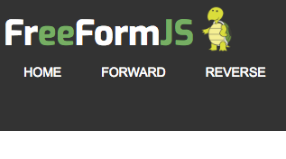
More typically it could be the top part of your screen but it can be wherever or whatever you need:
This technique can even allow you to have the dynamic part embedded inside the static portion of the index page. But for simplicity, we'll just use the top part of the screen for now. To get this technique to work, all you have to do is define where you want the dynamic portion of your index page to appear and give it a custom attribute: You guessed it, you apply ng-router as such:
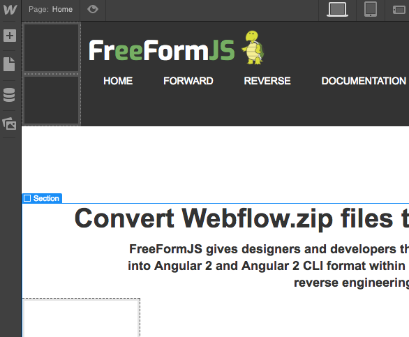
Simply identify where the dynamic content is to appear and give it the custom attribute ng-router = "home" value. (The area marked in blue as "Section" above is the dynamic area, not the main menu.)
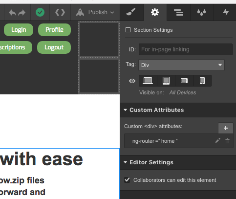
You'll notice that an id value is not necessary:
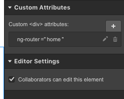
The value is trivial, but it should be set to home. At a late time we may give you the ability to define a customized name for your home.component.ts but for now we use the value of "home".
In Angular 2:
The first thing FreeFormJS will do is completely remove all HTML code from index.html and in it's place put the Angular 2 <app-root> tag.
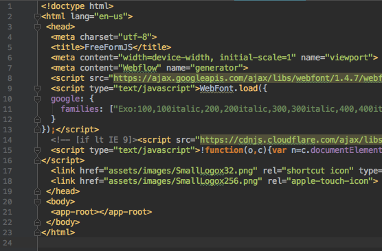
The second thing FreeFormJS will do is create a home.component.ts for you and place all the HTML inside the <div> with the ng-router custom attribute placed in there:
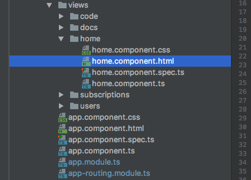
The third thing it'll do is take all the static portion of the index.html file and place it inside the app.component.ts with a special addition:
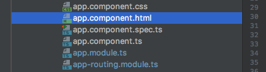
It will use the Angular 2 <router-outlet> in place of the <div> you marked with ng-router:
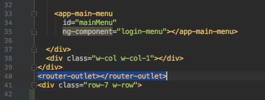
In the above image you'll see the ng-component custom attirbute in use for the main-menu. More on that later with ng-component:
ng-component
The forth thing it'll do is sort out all the other pages in your Webflow project and place references to them inside app-routing.module.ts. This allows Angular 2's standard routing mechanism to function as intended.
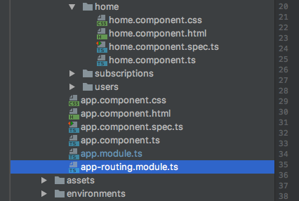
All your images and js files will be moved to the assets/ directory and all references to these images will be updated for you accordingly:
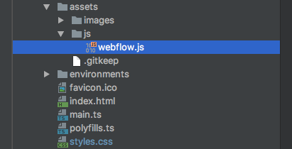
All your css files will be merged into your styles.css file. In Angular 2 however, you can also do custom css inside each component which is handled separately by Angular 2:
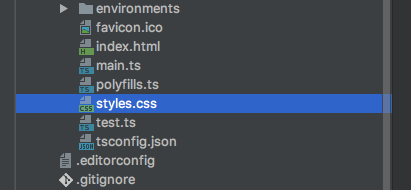
This is the default feature of FreeFormJS but can be either disabled or customized through the use of an iniFile which will be available on this site shortly.
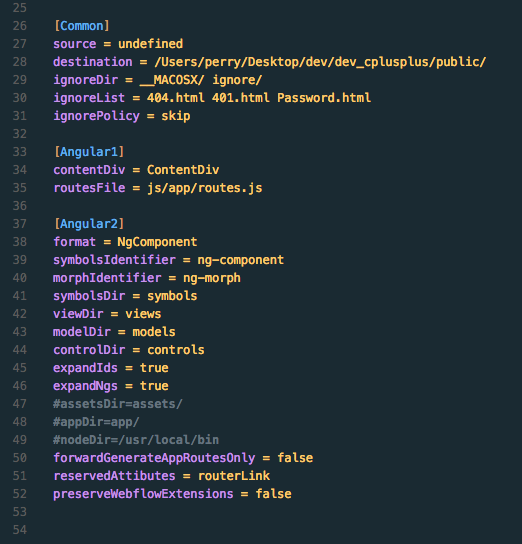
When FreeFormJS is complete, it will allow you to edit specific parameters for your project through this website. You should not have to edit the iniFile directly.
Most users are expected to find this auto-generation of an app-routing.module.ts file for you a great help. Others may feel that they can a do better job and may wish to disable this feature, the iniFile will allow you to do both!